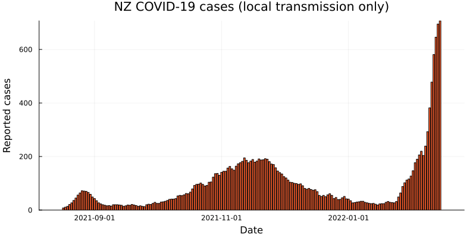
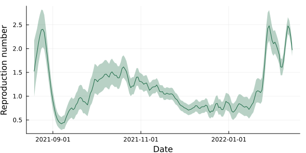
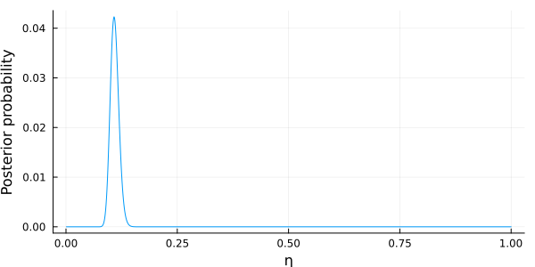

EpiFilter assumes that \(R_t\) follows a Gaussian random walk with standard deviation at time-step \(t\) equal to \(\eta\sqrt{R_{t-1}}\). This notebook:
Demonstrates how to fit EpiFilter with a fixed value of \(\eta\)
How to find the posterior distribution of \(\eta\)
How to marginalise out \(\eta\) to present robust estimates of \(R_t\)
How to find the predictive distribution for reported cases
How to calculate predictive coverage and scoring rule values
All code can be found in the /src/ folder of the GitHub repository. We recommend cloning this repository and then opening EpiFilter.ipynb in your preferred Jupyter notebook environment.
Setting up
First, we need to load the necessary source code and data. We will use data from the 2021 August outbreak of SARS-CoV-2 in Aotearoa New Zealand. The serial interval is assumed to be gamma-distributed with mean 6.5 days and standard deviation 4.2 days (Parag, Cowling, and Donnelly 2021; Ferguson et al. 2020).
usingPlots, Measures# Load package for plotting# Ensure we are working in the root directory# You may need to edit this for your own machineconst rootdir =@__DIR__cd(joinpath(rootdir, ".."))# Load source filesinclude("src/EpiFilter.jl")include("src/support.jl")# Load data(Ct, w) =loadData("NZCOVID_AUG2021")dates =Date("2021-08-17") .+Day.(0:181)# Plotbar(dates, Ct, size=(800,400), label=false, ylabel="Reported cases", xlabel="Date", title="NZ COVID-19 cases (local transmission only)", margins=3mm, color="#f25a2a")

Reported cases of COVID-19 from between 17 August 2021 and 14 February 2022.
Fitting default EpiFilter
We can fit the default EpiFilter model (with \(\eta = 0.1\)) using the EpiFilter(η, w, Ct) function:
# Fit the modelRgrid =LinRange(0.01, 10, 1000)(pRt, _, _) =EpiFilterForwards(0.1, w, Ct, Rgrid)# Extract mean and 95% credible interval(m, med, l, u) =calculateResults(pRt, Rgrid)# Plot outputplotR =plot(dates[3:end], m[3:end], ribbon=(m[3:end]-l[3:end], u[3:end]-m[3:end]), fillalpha=0.3, label=false, ylabel="Reproduction number", xlabel="Date", size=(600,300), color="#13643f")

Side-note: we also provide a function EpiFilterBackwards() which runs the backward-smoother version of EpiFilter. As our focus is on real-time estimation, we will not use this function in this notebook.
Likelihood and posterior distribution for \(\eta\)
To find the posterior distribution of \(\eta\), we run the model on a grid of values to estimate the likelihood, and normalise with respect to a prior distribution (in this case we use a uniform prior distribution on \((0, 1)\)). This takes approximately 1 minute on a 2021 MacBook Pro.
ηgrid =LinRange(0.001, 1, 1000) # The values of η to considerpη0=ones(length(ηgrid))/length(ηgrid) # A uniform prior on η(pη, pRgivenη, pRupgivenη) =EpiFilterRunAllη(w, Ct, Rgrid, pη0, ηgrid; windin=3, showProgress=false)plot(ηgrid, pη[:,end], label=false, xlabel="η", ylabel="Posterior probability", size=(600,300))

Marginal posterior distribution for \(R_t\)
We already have all the ingredients we need to find the marginal posterior distribution for \(R_t\). We can use the EpiFilterMarginalPosterior() function to do this.
CRPS of default EpiFilter = 6.765280808555216
CRPS of marginalised EpiFilter = 6.54316604914828
References
Ferguson, N, D Laydon, G Nedjati Gilani, N Imai, K Ainslie, M Baguelin, S Bhatia, et al. 2020. “Report 9: Impact of Non-Pharmaceutical Interventions (NPIs) to Reduce COVID19 Mortality and Healthcare Demand.” Imperial College London. https://doi.org/10.25561/77482.
Parag, Kris V., Benjamin J. Cowling, and Christl A. Donnelly. 2021. “Deciphering Early-Warning Signals of SARS-CoV-2 Elimination and Resurgence from Limited Data at Multiple Scales.”Journal of The Royal Society Interface 18 (185): 20210569. https://doi.org/10.1098/rsif.2021.0569.